🌳
Phylogenetics & Taxonomy
ClassificationKey Concepts
- Monophyletic (clade) — ancestral species + ALL descendants; the "gold standard" natural group
- Paraphyletic — ancestral species + SOME descendants (excludes one or more sub-lineages)
- Polyphyletic — group united by convergent evolution, NOT shared common ancestry
- Clade — synonym for monophyletic group; any branch on a tree including its root and all tips
- Taxonomic ranks (large → small) — Domain › Kingdom › Phylum › Class › Order › Family › Genus › Species
- Arthropoda is at the rank of Phylum; Cnidaria is also a Phylum
- Rank directly below Phylum = Class; directly above Family = Order; directly below Genus = Species
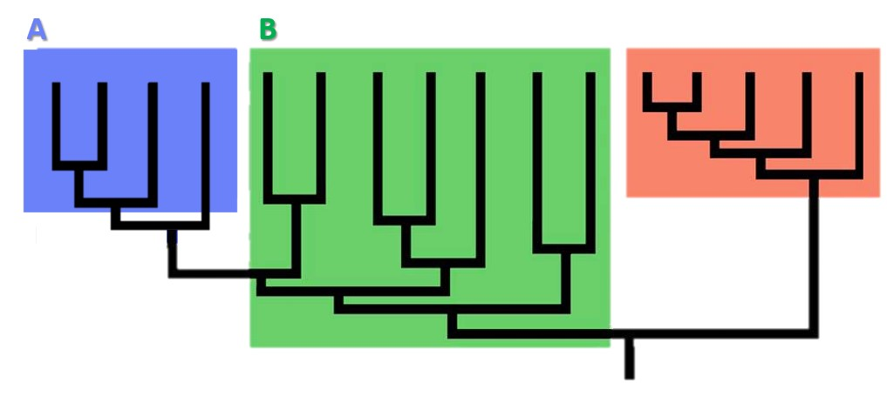
Phyletic Groups — Diagram 1
Region A = paraphyletic · Region B = paraphyletic (excludes sub-lineage)
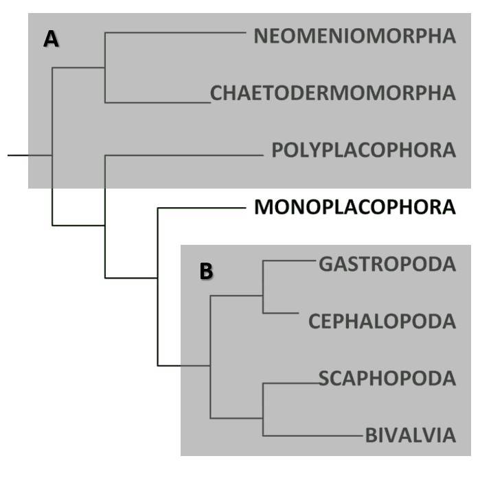
Phyletic Groups — Diagram 2
Region A = polyphyletic · Region B = monophyletic (clade)
| Term | Definition | Key Feature |
|---|---|---|
| Monophyletic / Clade | All descendants of one common ancestor | Includes ancestor + every descendant |
| Paraphyletic | Ancestor + some but not all descendants | Missing one or more sub-lineages |
| Polyphyletic | Members share trait via convergent evolution | No single common ancestor for the group |
| Phylum | Major taxonomic rank below Kingdom | e.g. Arthropoda, Cnidaria, Mollusca |
| Class | Rank immediately below Phylum | e.g. Insecta, Anthozoa, Gastropoda |
| Order | Rank immediately above Family | Between Class and Family |
| Family | Rank between Order and Genus | Groups closely related genera |
| Genus | Rank above Species | First word of binomial name |
| Species | Rank immediately below Genus | Second word of binomial name |
🧽
Porifera
Sponges Filter FeedersKey Biology
- No true tissues or organs — most basal animal phylum
- Sessile (attached) filter feeders — suspension feeding
- Water flow: Ostia → Spongocoel → Osculum (enter small, exit large)
- Choanocytes drive water current with flagella and capture food particles
- Amoebocytes transport nutrients and produce structural spicules

Sponge Internal Anatomy
A = osculum ·
B = spongocoel (central hollow cavity — collects filtered water before it exits) ·
C = amoebocyte ·
D = choanocyte collar ·
E = ostia (pores) ·
F = choanocyte (flagella)
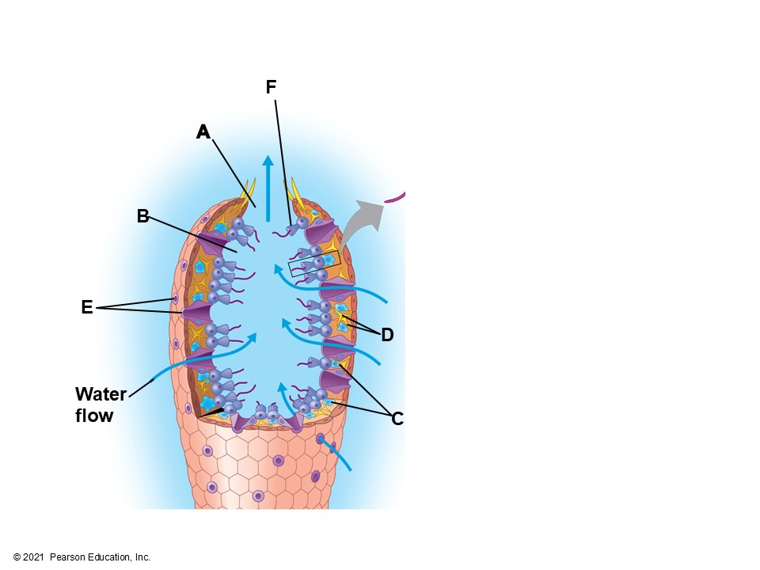
Sponge Cell Types
C = amoebocyte — mobile cell in mesohyl; distributes nutrients, secretes spicules
| Structure | Location | Function |
|---|---|---|
| Osculum | Large opening at apex | Water exits the sponge; creates low-pressure outflow |
| Ostia | Tiny pores in body wall | Water enters the sponge; inlet pores |
| Spongocoel | Central hollow cavity | Collects filtered water before it exits via osculum |
| Choanocyte | Lines spongocoel / chambers | Flagellum drives water current; collar traps food particles (bacteria, organic matter) |
| Amoebocyte | Mesohyl (middle jelly layer) | Transports nutrients from choanocytes to other cells; secretes spicules for structural support |
| Pinacocyte | Outer body surface | Flat epithelial-like cells; outer covering |
| Mesohyl | Between outer and inner layers | Gel-like extracellular matrix; houses amoebocytes and spicules |
Cnidaria
Jellyfish, Corals, Anemones, Hydra DiploblasticKey Biology
- Two body forms: Polyp (sessile, upright, mouth up) and Medusa (free-swimming, bell-shaped, mouth down)
- Three cell layers: Epidermis (outer) / Mesoglea (jelly middle) / Gastrodermis (inner)
- Single opening = mouth AND anus (gastrovascular cavity = GVC)
- Cnidocytes — stinging cells containing nematocysts; used for prey capture and defense
- Classes: Anthozoa (anemones/corals, polyp only) · Hydrozoa (Obelia, both forms) · Scyphozoa (true jellyfish, medusa dominant) · Cubozoa (box jellies)
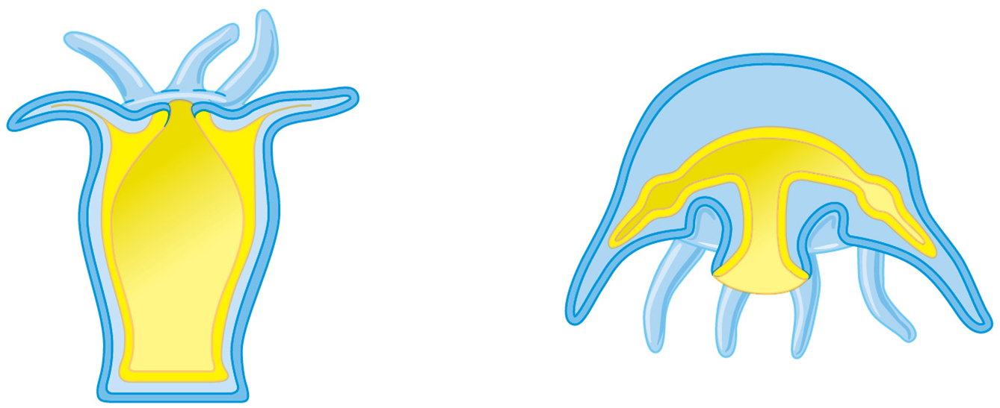
Two Body Forms
Left = polyp (sessile, mouth/tentacles up) ·
Right = medusa (free-swimming, bell up)
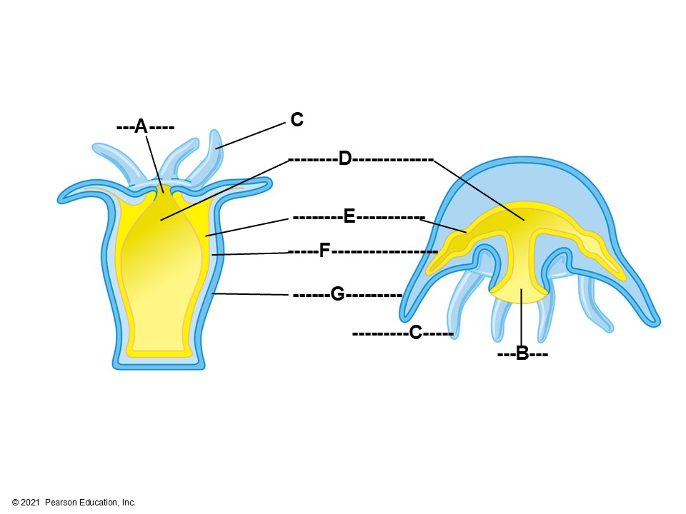
Cnidaria Internal Anatomy (Polyp & Medusa)
A = mouth/anus (single opening — both ingestion and egestion) ·
B = manubrium (oral tube below mouth) ·
C = tentacles ·
D = gastrovascular cavity ·
E = gastrodermis ·
F = mesoglea ·
G = epidermis
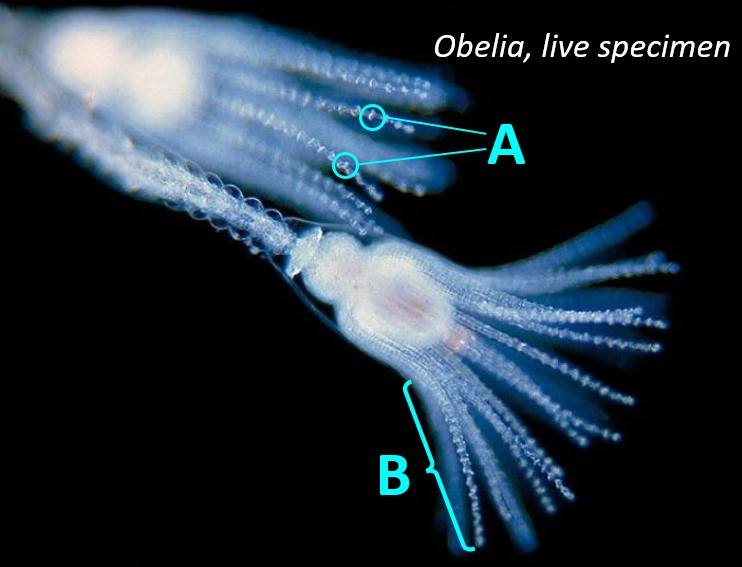
Obelia — Cnidocytes
A = cnidocytes — stinging cells that fire nematocysts into prey
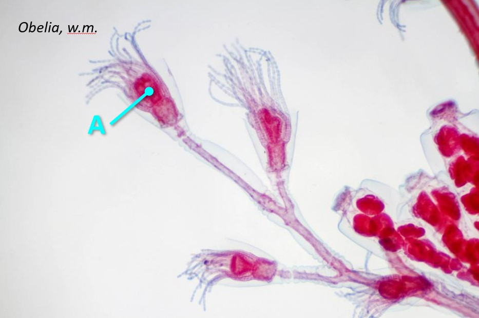
Hydrozoan (Obelia) Cross-Section
A = gastrovascular cavity — hollow interior; digestion & nutrient distribution; one opening = mouth/anus
| Structure | Location | Function |
|---|---|---|
| Gastrovascular Cavity | Central hollow of body | Digestion and nutrient distribution; single opening serves as both mouth and anus |
| Mouth / Anus | Oral end (polyp: top; medusa: bottom) | Single opening for ingestion and waste egestion |
| Tentacles | Around oral opening | Capture prey; armed with cnidocytes |
| Cnidocytes | Tentacles and body surface | Stinging cells; contain nematocysts that fire upon contact; paralyze or kill prey |
| Epidermis | Outer cell layer | Protection; derived from ectoderm |
| Gastrodermis | Inner cell layer (lines GVC) | Digestion and absorption; derived from endoderm |
| Mesoglea | Between epidermis and gastrodermis | Hydrostatic skeleton; gives jellyfish its bulk ("jelly") |
| Gonad | Along body wall or tentacles | Produces eggs or sperm for sexual reproduction |
| Polyp form | Attached to substrate | Sessile feeding stage; asexual reproduction by budding |
| Medusa form | Free-swimming | Sexual reproduction; dispersal |
🪱
Platyhelminthes
Flatworms AcoelomateKey Biology
- Acoelomate — no body cavity; space between gut and body wall filled with mesenchyme (parenchyma)
- Three classes: Turbellaria (planarians, free-living carnivores) · Trematoda (flukes, digestive parasites) · Cestoda (tapeworms, digestive endoparasites)
- Tapeworms have no digestive system — absorb nutrients directly through tegument
- Planarians are free-living carnivores found in freshwater, marine, and damp terrestrial environments
- Flukes and tapeworms are digestive system parasites
Tapeworm (Cestoda)
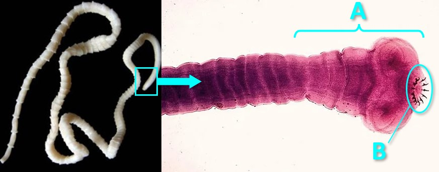
Taenia — Scolex Region
A = scolex (head — attachment organ) ·
B = rostellum (ring of hooks on scolex)
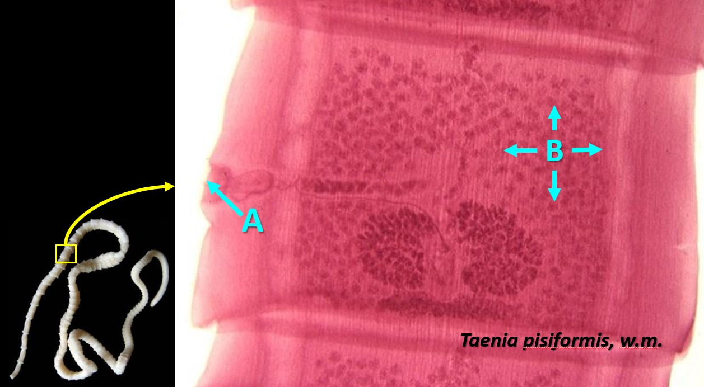
Tapeworm Body (Proglottids)
A = genital pore (reproductive outlet on each segment) ·
B = proglottid (body segment containing reproductive organs)
Planarian (Turbellaria)
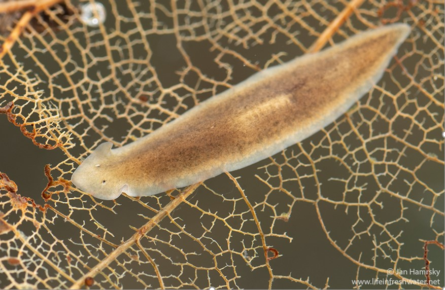
Planarian Flatworm
Free-living carnivore. Soft, unsegmented. Cephalised with eyespots (photoreceptors) and auricles (chemoreceptors).
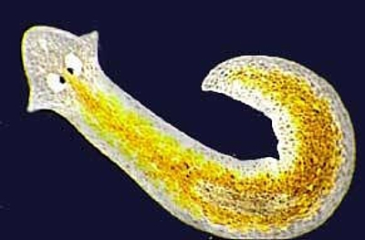
Planarian Internal Anatomy
Purple arrow = pharynx (muscular feeding tube, extendable) ·
Red arrow = gastrovascular cavity (branching intestine)
| Structure | Found In | Function |
|---|---|---|
| Scolex | Tapeworm anterior end | Attachment "head" — anchors worm to host intestine wall |
| Rostellum | Top of scolex | Ring of hooks for additional grip |
| Suckers | Scolex surface | Muscular cups for adhesion to intestinal wall |
| Proglottid | Body (strobila) | Each segment contains complete male + female reproductive organs; mature proglottids shed with eggs |
| Genital Pore | Side of each proglottid | Shared reproductive opening; eggs and sperm exit here |
| Ovary | Within proglottid | Produces eggs (female gametes) |
| Testes | Within proglottid | Produce sperm (male gametes) |
| Uterus | Within proglottid | Stores fertilised eggs; fills gravid (final) proglottids |
| Pharynx | Planarian mid-body | Muscular feeding tube; extends to capture and ingest prey |
| Gastrovascular Cavity | Planarian body | Highly branched gut for digestion and nutrient distribution; one opening |
| Mesenchyme (Parenchyma) | Between gut and skin | Fills acoelomate body; no fluid-filled body cavity |
🔴
Nematoda
Roundworms — Ascaris PseudocoelomateKey Biology
- Pseudocoelomate — false body cavity (not fully lined by mesoderm)
- Non-segmented, cylindrical body enclosed in cuticle (shed during molting)
- Strong sexual dimorphism: females are larger (coiled tail) — males are smaller (curved tail with spicules)
- Ascaris lumbricoides — large intestinal roundworm; common lab specimen
- Complete digestive system: mouth → pharynx → intestine → anus
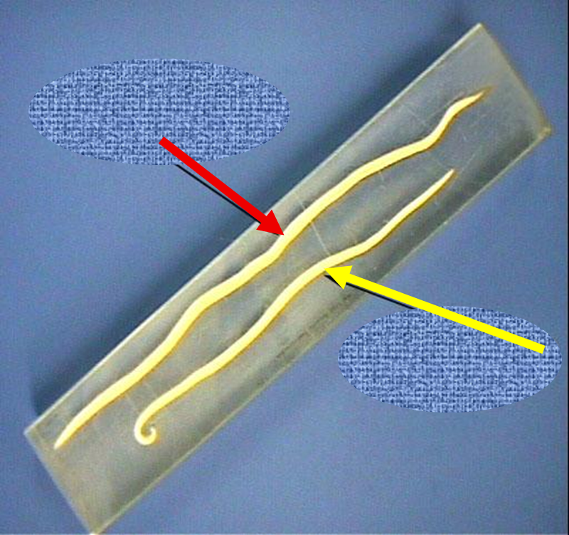
Sexual Dimorphism
Red arrow = female (larger, straight posterior) ·
Yellow arrow = male (smaller, curved/hooked posterior tail)
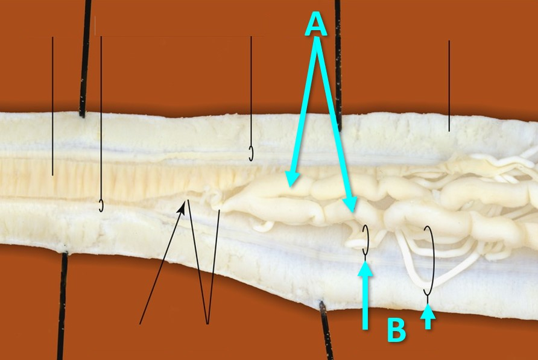
Ascaris Female Dissection (EcdyDiss1)
A = uterus (coiled tubes — stores eggs) ·
B = oviducts (connect ovaries to uterus)
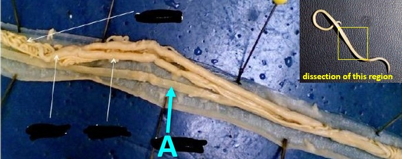
Ascaris — Intestine
A = intestine (broad, flat tube running length of body — absorbs nutrients)
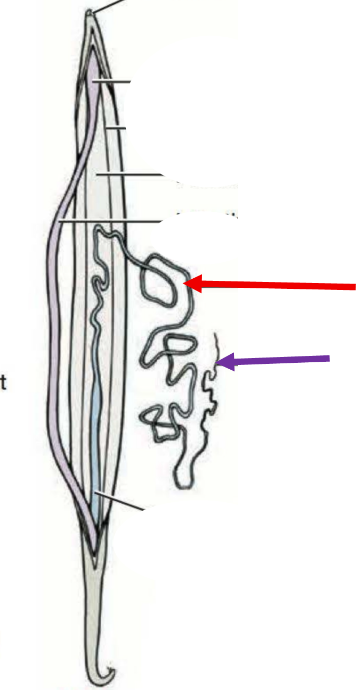
Male Nematode Reproductive System
Purple arrow = testes ·
Red arrow = ductus deferens (vas deferens) — carries sperm to cloaca
| Structure | Sex | Function |
|---|---|---|
| Intestine | Both | Digestion and absorption of nutrients from host gut |
| Cuticle | Both | Tough outer protective layer; shed (molted) as worm grows |
| Uterus | Female | Stores fertilised eggs before they are laid |
| Ovary | Female | Produces eggs by meiosis |
| Oviduct | Female | Transports eggs from ovary to uterus; site of fertilisation |
| Testes | Male | Produce sperm by meiosis |
| Ductus deferens (Vas deferens) | Male | Transports sperm from testes toward cloaca for copulation |
🐛
Annelida
Segmented Worms Coelomate · SegmentedKey Biology
- True coelom (body cavity fully lined by mesoderm)
- Body divided into metameres (segments) — each with its own coelom, nerves, muscles
- Classes: Oligochaeta (earthworms, few setae) · Polychaeta (marine worms, many setae, parapodia) · Hirudinea (leeches, no setae)
- Setae (chaetae) — chitinous bristles for locomotion in oligochaetes and polychaetes
- Closed circulatory system; 5 pairs of aortic arches (hearts) pump blood
- Earthworms are deposit feeders — ingest soil organic matter
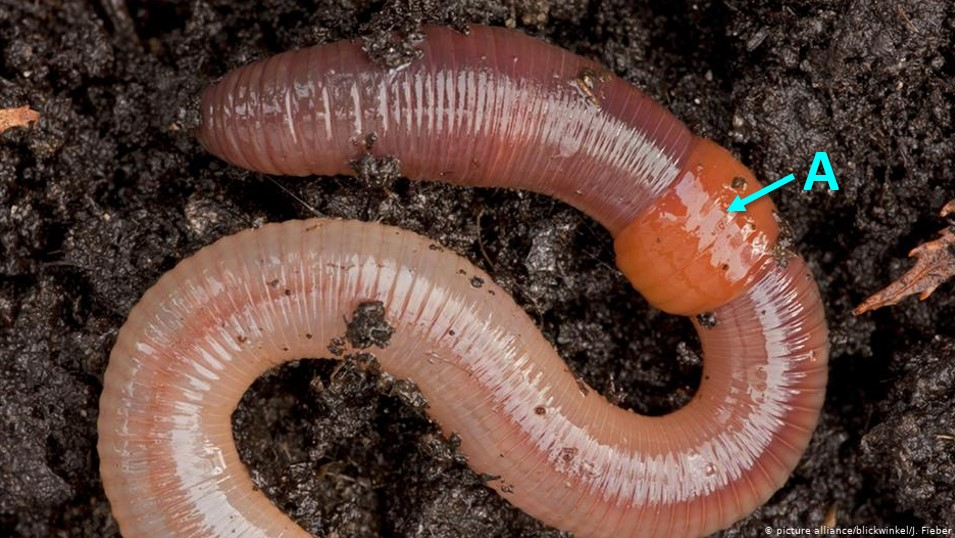
Earthworm External — Clitellum
A = clitellum — thickened band of glandular segments; secretes mucous cocoon for egg deposition; reproductive structure
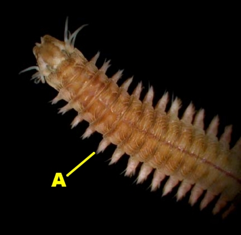
Earthworm — Chaetae (Setae)
A = chaetae (setae) — stiff chitinous hairs projecting from each segment; anchor in soil during locomotion
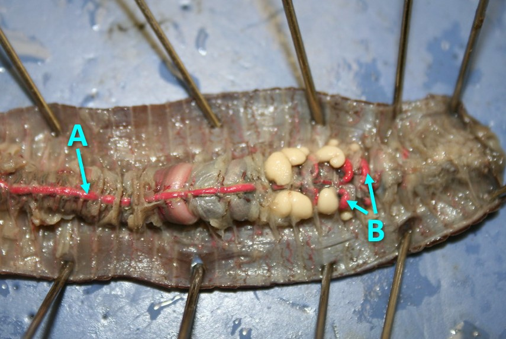
Earthworm Dissection
A = dorsal blood vessel (red line — carries oxygenated blood anteriorly toward head)
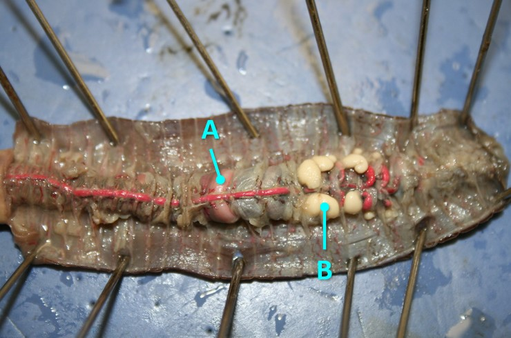
Earthworm Dissection — Gizzard
A = gizzard (muscular grinding chamber — mechanically breaks down soil/food with ingested sand grains)
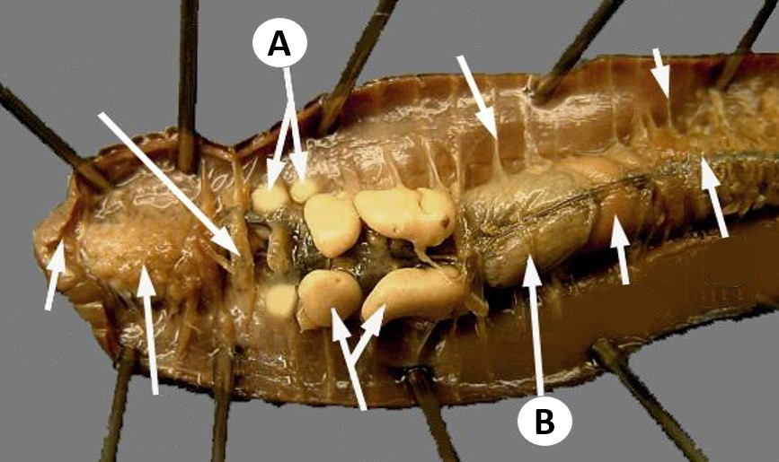
Earthworm — Crop
B = crop (thin-walled storage pouch — temporarily holds ingested soil before it passes to gizzard)

Earthworm Dissection — Seminal Vesicle
B = seminal vesicle (cream-colored lobes — stores and matures sperm before copulation)

Earthworm — Aortic Arches (Hearts)
B = hearts / aortic arches (red ring-like structures — 5 pairs connect dorsal and ventral blood vessels; pump blood)
| Structure | Location | Function |
|---|---|---|
| Clitellum | Anterior region (segments 32–37) | Secretes mucous cocoon for egg fertilisation and deposition; reproductive |
| Setae / Chaetae | Ventral surface of each segment | Bristles anchor in soil during peristaltic locomotion |
| Crop | Anterior digestive tract | Temporary food storage before grinding |
| Gizzard | After crop | Muscular; mechanically grinds soil and organic matter with ingested sand grains |
| Intestine | Most of body length | Digestion and absorption of organic nutrients from soil |
| Dorsal Blood Vessel | Dorsal midline | Carries oxygenated blood anteriorly (toward head) |
| Hearts (Aortic Arches) | Segments 7–11 (5 pairs) | Pump blood between dorsal and ventral vessels; maintain circulation |
| Seminal Vesicles | Anterior segments | Store and mature sperm before copulation |
| Seminal Receptacles | Anterior segments | Store partner's sperm received during copulation |
| Nephridia | Most segments (paired) | Excretory organs — filter coelomic fluid and excrete metabolic waste (analogous to kidneys) |
| Coelom | Body cavity between gut and body wall | True fluid-filled cavity lined by mesoderm; hydrostatic skeleton; houses organs |
🐚
Mollusca
Snails, Squid, Clams, Chitons Coelomate · LophotrochozoaKey Biology
- Body plan: Mantle (secretes shell) + Foot (locomotion) + Visceral Mass (organs)
- Classes: Gastropoda (snails/slugs) · Cephalopoda (squid, octopus, cuttlefish) · Bivalvia (clams, oysters) · Polyplacophora (chitons)
- Cephalopods have 8 arms + 2 tentacles (squid/cuttlefish); octopus = 8 arms only
- Siphon — jet propulsion in cephalopods; water entry/exit in bivalves
- Radula — rasping tongue-like structure for feeding (absent in bivalves)
- Mantle cavity — space enclosed by mantle; contains gills (ctenidia)
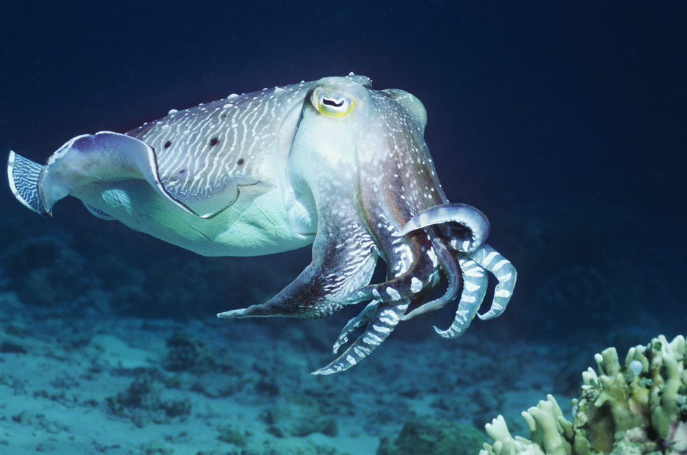
Cuttlefish — Class Cephalopoda
Phylum Mollusca · Class Cephalopoda. Note tentacles, arms, and mantle visible externally.

Squid Dissection — Appendages
B = tentacle (one of 2 longer capture tentacles — longer than the 8 arms; rapid extension for prey capture)
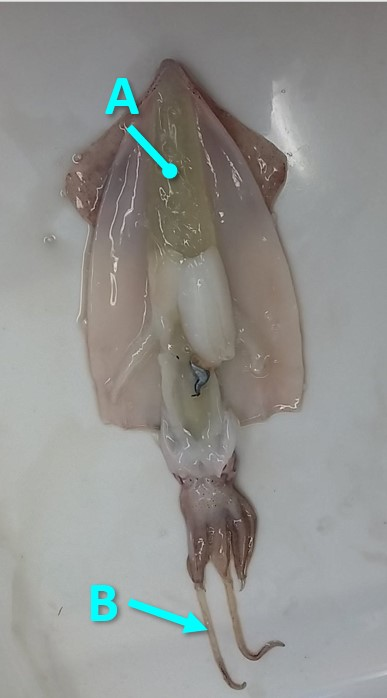
Squid Dissection — Gonad
A = ovary (female; produces eggs) ·
Testis in males occupies same position

Squid Dissection — Gills
Red arrows = gills (ctenidia — feathery structures for gas exchange O₂/CO₂ in mantle cavity)
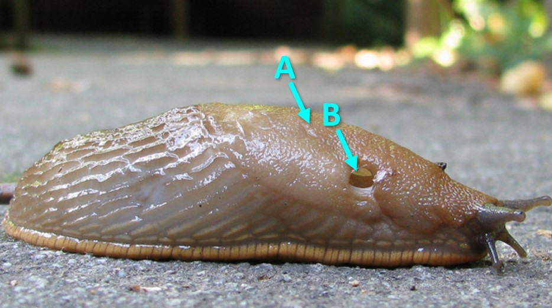
Gastropoda — Snail
Class Gastropoda. Coiled shell. Radula used for rasping food. Broad flat foot for locomotion.
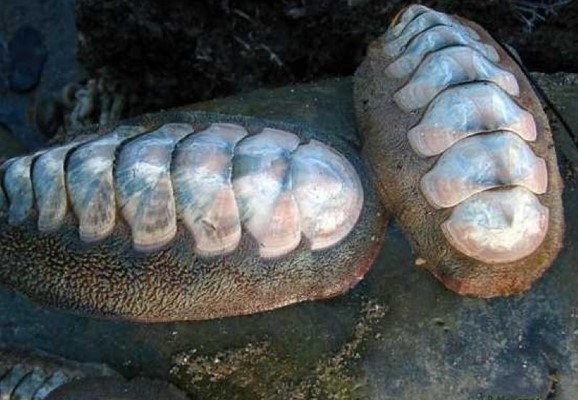
Polyplacophora — Chitons
8 overlapping shell plates (valves). Marine. Radula used to scrape algae from rocks.
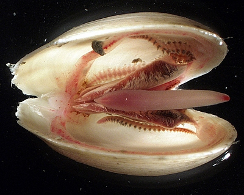
Bivalve / Cephalopod Internal
Red arrow = mantle cavity (space enclosed by mantle; houses gills and siphon)
| Structure | Class(es) | Function |
|---|---|---|
| Mantle | All | Sheet of tissue enveloping visceral mass; secretes calcium carbonate shell |
| Mantle Cavity | All | Space between mantle and body; houses gills (ctenidia) and siphon |
| Foot | All | Muscular locomotion organ — creeping (gastropods), burrowing (bivalves), modified into arms/tentacles (cephalopods) |
| Radula | Most (not Bivalvia) | Toothed rasping tongue; scrapes algae or seizes prey |
| Gills (Ctenidia) | All aquatic | Gas exchange (O₂/CO₂); filter feeding in bivalves |
| Siphon | Cephalopoda, Bivalvia | Cephalopods: jet propulsion via forceful water expulsion. Bivalves: water inlet/outlet |
| Arms (8) | Cephalopoda | Shorter; lined with suckers; manipulate and hold prey |
| Tentacles (2) | Squid, Cuttlefish | Longer than arms; rapid extension to capture prey |
| Pen (Gladius) | Squid, Cuttlefish | Internal remnant of ancestral shell; structural support for mantle |
| Beak | Cephalopoda | Hard chitinous jaw; tears and bites prey |
| Testis / Ovary | Cephalopoda | Gonad; reproductive organ producing sperm or eggs |
🦀
Arthropoda
Crayfish, Insects, Arachnids Ecdysozoa · Jointed LegsKey Biology
- Largest animal phylum by species count
- Exoskeleton of chitin — shed (molted) via ecdysis for growth
- Jointed, paired appendages; segmented body
- Classes: Insecta (6 legs, 3 body regions) · Malacostraca (crustaceans: crayfish, crabs) · Arachnida (8 legs: spiders, scorpions) · Myriapoda (centipedes, millipedes)
- Crayfish body = Cephalothorax (fused head + thorax) + Abdomen
- Open circulatory system (hemolymph in sinuses) — exception to most body cavity fluid rules
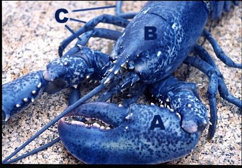
Crayfish External Anatomy
A = cheliped (large claw — defense, food capture) ·
B = cephalothorax ·
C = walking legs
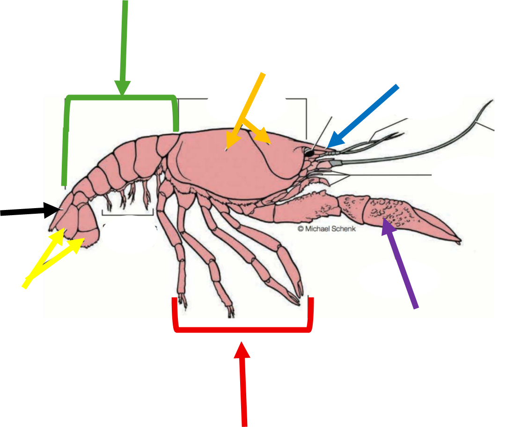
Crayfish — Rostrum & Telson
Blue arrow = rostrum (anterior spine on carapace — protection) ·
Black arrow = telson (posterior plate — part of tail fan)
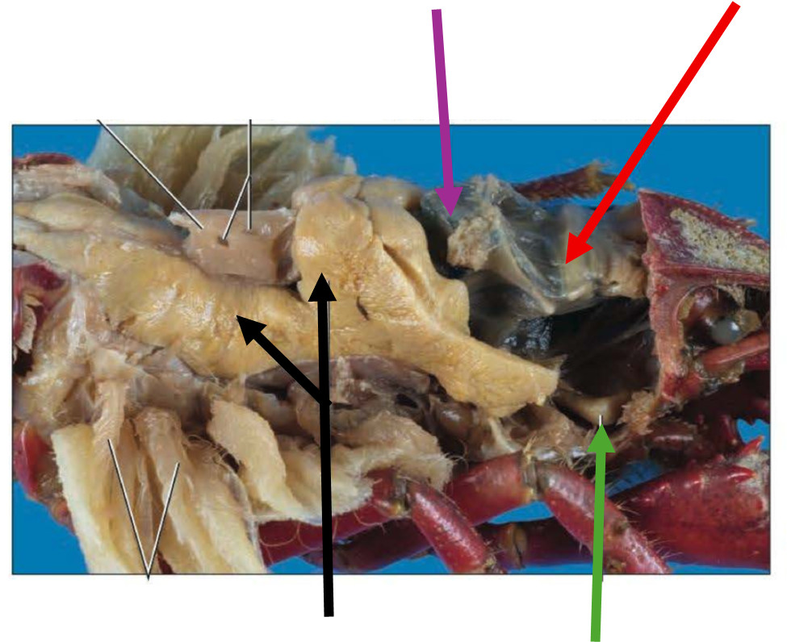
Crayfish Dissection — Green Gland
Green arrow = green gland (antennal gland — excretory organ, filters hemolymph and excretes nitrogenous waste)

Crayfish Dissection — Stomach
Green arrow = cardiac stomach (anterior, larger — receives food; has gastric mill with teeth) ·
Orange arrow = pyloric stomach (posterior, smaller — filters food before intestine)
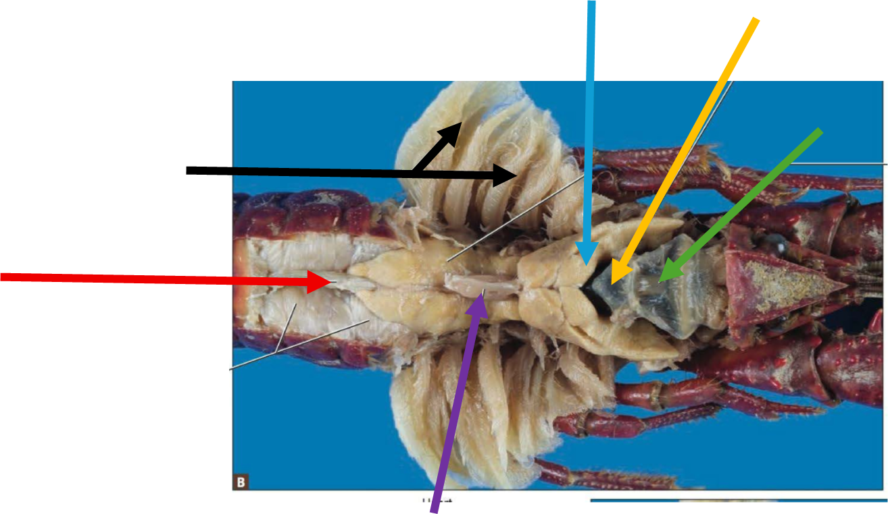
Crayfish Dissection — Heart
Purple arrow = heart (dorsal, small — pumps hemolymph into open sinuses)

Crayfish Dissection — Digestive Gland
Black arrow = digestive gland (hepatopancreas — large brown/green gland; secretes digestive enzymes, absorbs nutrients, stores glycogen)
| Structure | Location | Function |
|---|---|---|
| Cephalothorax | Anterior body region | Fused head + thorax; covered by carapace; houses brain, stomach, gills, heart |
| Abdomen | Posterior body region | Houses intestine; bears swimmerets; tail fan for escape response |
| Rostrum | Anterior tip of carapace | Protective spine projecting forward; may help streamline body |
| Cheliped | First pair of walking legs | Large claws; prey capture, defense, and social signaling |
| Walking Legs | Cephalothorax (4 pairs) | Locomotion on substrate |
| Swimmerets (Pleopods) | Abdomen (ventral) | Swimming; in females, brood eggs; in males, first pair used in sperm transfer |
| Telson | Posterior tip | Middle plate of tail fan; with uropods forms fan for escape flip |
| Uropod | Flanking telson | Paired paddle-like plates; with telson = tail fan for rapid backward escape swimming |
| Cardiac Stomach | Anterior stomach | Receives food; gastric mill (calcified teeth) grinds food |
| Pyloric Stomach | Posterior to cardiac | Filters finely ground food; sends to digestive gland, coarse particles to intestine |
| Digestive Gland (Hepatopancreas) | Cephalothorax (large, paired) | Secretes digestive enzymes; absorbs nutrients; stores glycogen and lipids |
| Green Gland (Antennal Gland) | Anterior cephalothorax | Excretory organ; filters hemolymph and excretes nitrogenous waste at base of antennae |
| Heart | Dorsal cephalothorax | Pumps hemolymph into open hemocoel (sinuses); arthropods have open circulatory system |
| Gills | Lateral cephalothorax | Gas exchange; feathery extensions bathed in water flowing under carapace |
| Intestine | Runs dorsal through abdomen | Final digestion and absorption; waste exits at anus beneath telson |
🥚
Embryology
Sea Star Gastrulation · Chick Embryo Developmental StagesKey Concepts
- Developmental sequence: Unfertilized Egg → Fertilized Egg → Blastula → Gastrula → Early Neurula → Late Neurula
- Blastula — hollow ball of cells; internal cavity = blastocoel
- Gastrula — formed by invagination (gastrulation); establishes the three germ layers
- Blastopore — opening created by invagination during gastrulation
- Gastrocoel (Archenteron) — new internal cavity formed by invagination; becomes future gut
- Three germ layers: Ectoderm (outer) · Mesoderm (middle) · Endoderm (inner)
- Somites — blocks of paraxial mesoderm in chick and frog embryos; give rise to vertebrae, muscles, dermis
- Neural plate — flat ectoderm thickening in early neurula; folds to form neural tube
- Neural tube — hollow ectodermal tube in late neurula; becomes brain (anterior) + spinal cord (posterior)
- Notochord — mesodermal rod beneath neural tube; induces neurulation; replaced by vertebral column in adults
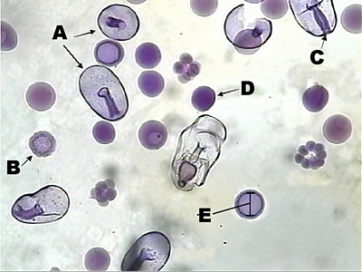
Sea Star Development Stages
A = gastrula ·
B = blastula ·
C = blastopore ·
D = fertilized egg ·
E = blastocoel
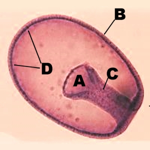
Sea Star Gastrulation — Germ Layers
A = gastrocoel / archenteron (new gut cavity formed by invagination) ·
B = ectoderm (outermost germ layer) ·
C = endoderm (innermost germ layer) ·
D = mesoderm (middle germ layer)
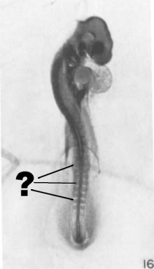
Chick Embryo — Somites
Indicated structures = somites — paired blocks of paraxial mesoderm; give rise to axial skeleton (vertebrae), skeletal muscles of trunk and limbs, and dermis

Sea Star Development — Blastocoel
E = blastocoel (fluid-filled cavity inside blastula — collapses as archenteron expands during gastrulation)
| Structure / Stage | When | Description & Significance |
|---|---|---|
| Fertilized Egg (Zygote) | Stage 1 | Single diploid cell; result of sperm + egg fusion |
| Blastula | After cleavage | Hollow ball of cells; interior = blastocoel |
| Blastocoel | Blastula | Fluid-filled cavity within blastula; collapses during gastrulation as gastrocoel expands |
| Gastrula | After gastrulation | Three-layered embryo; establishes body axes and germ layers |
| Blastopore | During gastrulation | Indentation/opening where cells invaginate; becomes mouth (protostomes) or anus (deuterostomes, e.g. sea stars) |
| Gastrocoel (Archenteron) | During gastrulation | New gut cavity formed by invagination; opens at blastopore; will become the digestive tract |
| Ectoderm | Germ layer | Outermost layer → skin (epidermis), nervous system, sense organs |
| Mesoderm | Germ layer | Middle layer → muscles, circulatory system, kidneys, gonads, skeleton |
| Endoderm | Germ layer | Innermost layer → gut lining, liver, lungs, pancreas |
| Unfertilized Egg | Before fertilization | Haploid (n); has completed meiosis; no developmental program activated yet |
| Somites | Chick embryo | Paired blocks of paraxial mesoderm flanking the neural tube; differentiate into vertebrae, skeletal muscles, and dermis |
| Neural Plate | Early neurula | Flat thickening of dorsal ectoderm; induced by notochord; will fold to form neural tube |
| Neural Tube | Late neurula | Hollow tube formed when neural plate edges roll up and fuse; becomes brain (anterior) + spinal cord (posterior) |
| Notochord | Neurula | Rod of mesoderm beneath neural tube; provides structural support; induces neural plate; replaced by vertebral column in adults |
Frog Embryo — Neurula Stage
Neurula Key Concepts
- Neurulation = the process that converts the flat neural plate into the hollow neural tube
- Early neurula — neural plate visible; neural folds beginning to rise on each side
- Late neurula — neural folds have fused at midline, forming the closed neural tube
- Dorsal-to-ventral cross-section order: Neural tube → Notochord → Gastrocoel (archenteron)
- Germ layer origins: Neural tube & epidermis = ectoderm · Notochord & somites = mesoderm · Gut lining = endoderm
| Structure | Location in cross-section | Germ Layer | Function / Fate |
|---|---|---|---|
| Neural plate | Dorsal ectoderm (early neurula only) | Ectoderm | Flat sheet that folds inward; precursor to neural tube |
| Neural tube | Dorsal midline (late neurula) | Ectoderm | Hollow tube → anterior becomes brain, posterior becomes spinal cord |
| Notochord | Directly beneath neural tube | Mesoderm | Rod; induces neural plate; replaced by vertebral column in adults |
| Somites | Flanking notochord (paired) | Mesoderm | Segmental blocks → vertebrae, skeletal muscles, dermis |
| Gastrocoel (archenteron) | Ventral / central cavity | Endoderm-lined | Future gut; formed during earlier gastrulation |
| Epidermis | Outermost layer | Ectoderm | Covers embryo surface; will become skin |
🔬
Histology
Animal Tissue Types 4 Major TissuesFour Major Tissue Types
- Epithelial — covers surfaces, lines cavities; cells tightly packed; avascular
- Connective — supports, binds, and fills; cells in abundant extracellular matrix (ECM)
- Muscle — contractile; produces movement
- Nervous — transmits electrical signals; coordinates responses
Epithelial Tissue
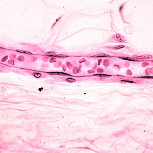
Simple Squamous Epithelium
Single layer of flat (scale-like) cells. Lines blood vessels (endothelium) and alveoli. Function: rapid diffusion of gases and filtration.
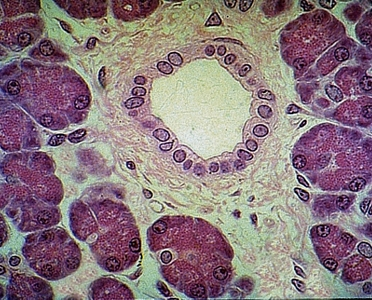
Simple Cuboidal Epithelium
Single layer of cube-shaped cells. Lines kidney tubules and pancreatic ducts. Function: secretion and absorption.
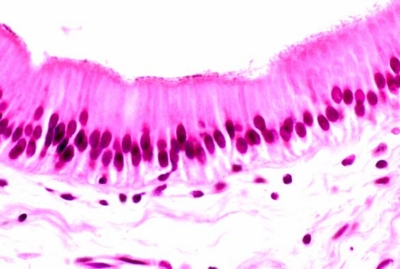
Simple Columnar Epithelium
Single layer of tall column-shaped cells. Lines trachea and intestines (jejunum). Function: secretion, absorption, mucus production. ·
Goblet cells = scattered mucus-secreting cells interspersed among columnar cells (flask/goblet-shaped, pale cytoplasm) ·
Basal lamina = thin acellular layer anchoring epithelium to connective tissue below
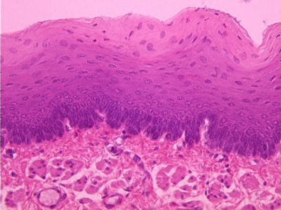
Stratified Squamous Epithelium
Multiple layers; surface cells flat and squamous. Forms epidermis of skin, mouth lining, esophagus. Function: protection against abrasion. ·
Basal lamina = visible as a thin pale line at the base of the epithelial layer (interface with connective tissue)
Connective Tissue
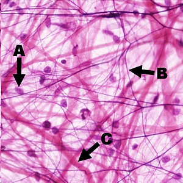
Loose Areolar Connective Tissue
A = fibroblast (produces fibers) ·
B = elastin fiber (yellow, branching) ·
C = collagen fibers (thick, wavy, pink bundles). Widely spaced fibers, abundant ground substance.
Dense connective tissue — found at outer edge of tracheal cartilage on lab slide
Dense Connective Tissue
Fibroblasts = cells present (fewer than in loose CT) ·
Collagen fibers = tightly packed, parallel bundles — much denser than areolar CT ·
No elastin; very little ground substance. Location on trachea slide: outer rim, wrapping cartilage ring. Forms tendons and ligaments.
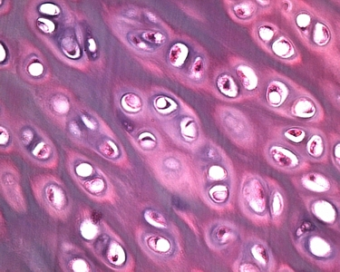
Hyaline Cartilage
Cells = chondrocytes (in lacunae — small spaces within glassy ECM). Strong, flexible. Covers joint surfaces, forms tracheal rings.
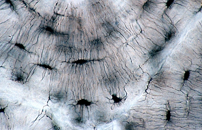
Bone (Osseous Tissue)
Cells = osteocytes (in lacunae within calcified ECM). Haversian systems visible. Function: structural support, mineral storage, protection.
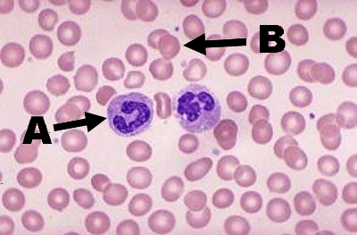
Blood (Fluid Connective Tissue)
A = leukocyte / white blood cell (large, nucleated — immune defense) ·
B = erythrocytes / red blood cells (small, biconcave, anucleate — O₂ transport)
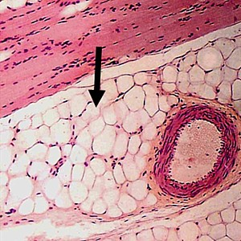
Adipose Tissue
Loose connective tissue dominated by adipocytes (fat cells — large, cytoplasm nearly all lipid droplet, nucleus pushed to periphery). Function: energy storage, insulation, cushioning.
Muscle Tissue
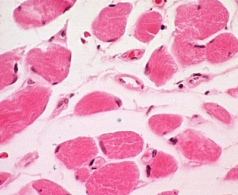
Skeletal Muscle (Voluntary)
Long, cylindrical cells; multinucleated; visible striations (cross-banding). Attached to skeleton via tendons. Voluntary control.
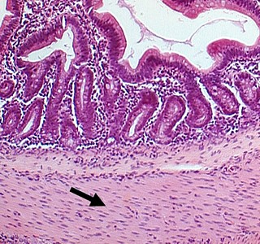
Smooth Muscle (Involuntary)
Spindle-shaped cells; single central nucleus; no striations. Lines walls of blood vessels, digestive tract, uterus. Involuntary control.
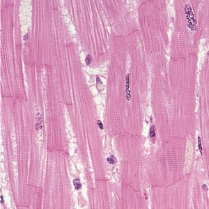
Cardiac Muscle (Involuntary)
Branched cells; single nucleus; striations present; connected by intercalated discs. Heart wall only. Involuntary; rhythmic contraction.
Nervous Tissue
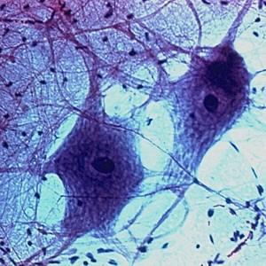
Nervous Tissue
A = neuron (large cell body with branching dendrites and long axon — transmit electrical signals) ·
B = glial cell (neuroglia — smaller; support, protect, and nourish neurons)
| Tissue / Cell Type | Category | Key Identifying Features & Function |
|---|---|---|
| Simple squamous epithelium | Epithelial | Single layer, flat cells; rapid diffusion; blood vessel lining |
| Simple cuboidal epithelium | Epithelial | Single layer, cube-shaped cells; secretion/absorption; kidney tubules, pancreatic ducts |
| Simple columnar epithelium | Epithelial | Single layer, tall cells; secretion/absorption; intestine, trachea. Contains goblet cells (mucus-secreting). Rests on basal lamina. |
| Stratified squamous epithelium | Epithelial | Multiple layers, flat at surface; protection; epidermis, mouth. Basal lamina visible at base. |
| Goblet cell | Epithelial (columnar) | Flask-shaped; pale cytoplasm packed with mucin granules; opens apically; secretes mucus; found in simple columnar epithelium of gut and trachea |
| Basal lamina | Epithelial (ECM) | Thin acellular sheet at base of all epithelia; anchors epithelial cells to underlying connective tissue; secreted by epithelial cells |
| Loose areolar connective tissue | Connective | Collagen + elastin fibers + fibroblasts in gel-like matrix; fills spaces, supports organs |
| Dense connective tissue | Connective | Tightly packed parallel collagen fibers; few cells (fibroblasts); little ground substance; great tensile strength; tendons, ligaments, outer tracheal cartilage ring |
| Adipose tissue | Connective | Adipocytes with large lipid vacuole; energy storage, insulation, cushioning |
| Hyaline cartilage | Connective (supporting) | Chondrocytes in lacunae; glassy ECM; flexible support; joint surfaces, tracheal rings |
| Bone | Connective (supporting) | Osteocytes in lacunae; calcified (mineralized) ECM; structural support, Ca²⁺ storage |
| Blood | Connective (fluid) | Erythrocytes (O₂ transport) + leukocytes (immune) + platelets; liquid matrix = plasma |
| Erythrocyte (RBC) | Blood cell | Biconcave disc; no nucleus; packed with hemoglobin; O₂ and CO₂ transport |
| Leukocyte (WBC) | Blood cell | Nucleated; various types; immune defense and surveillance |
| Fibroblast | Connective cell | Produces collagen, elastin, and ground substance; most common cell in loose connective tissue |
| Chondrocyte | Connective cell | Cartilage cell; sits in lacuna; maintains cartilage ECM |
| Osteocyte | Connective cell | Mature bone cell; sits in lacuna within calcified matrix; maintains bone tissue |
| Skeletal muscle | Muscle | Striated; multinucleated; voluntary; attached to skeleton |
| Smooth muscle | Muscle | No striations; spindle-shaped; involuntary; hollow organ walls |
| Cardiac muscle | Muscle | Striated; intercalated discs; involuntary; heart only |
| Neuron | Nervous | Large cell body + dendrites + axon; transmits action potentials |
| Glial cell (Neuroglia) | Nervous | Support cells; insulate, protect, and nourish neurons; far outnumber neurons |
📋
Animal Tissues & Embryology — Lab Reference
BIOL 212 LOsHow to use this table
- Items in bold in the original LO sheet are testable — know them by name
- "Structures to identify" = what you must be able to point to on a slide or diagram
- "Slide label" = the name of the microscope slide used in lab
Part I — Animal Tissues
| Sub-category | Specific tissue type | Structures to identify | Slide label | Where to look |
|---|---|---|---|---|
| Epithelia | ||||
| Simple epithelium | Simple columnar epithelium | Goblet cells, basal lamina | Jejunum Trachea |
Lining lumen |
| Simple cuboidal epithelium | Basal lamina | Kidney | Lining lumen of kidney tubules | |
| Simple squamous epithelium | — | Skin Artery, vein, & nerve |
Lining lumen of blood vessels | |
| Stratified epithelium | Stratified squamous epithelium | Basal lamina | Esophagus | Lining lumen |
| Connective tissue | ||||
| Loose connective tissue | Areolar connective tissue | Identify tissue, fibroblasts, matrix, collagen fibers, elastin fibers | Areolar tissue | — |
| Dense connective tissue | Dense connective tissue | Identify tissue, fibroblasts, matrix, collagen fibers | Trachea/esophagus | Outer edge of tracheal cartilage |
| Supporting connective tissue | Cartilage | Identify tissue, chondrocytes, matrix | Trachea/esophagus | Wall of trachea |
| Bone | Identify tissue, osteocytes, matrix | Ground bone | — | |
| Fluid connective tissue | Blood | Identify tissue, erythrocytes (RBC), leukocytes (WBC), matrix (plasma) | Blood smear | — |
| Muscle tissue | ||||
| Muscle | Skeletal muscle | Identify tissue | Striated muscle | — |
| Smooth muscle | Identify tissue | Artery, vein, & nerve Jejunum |
Intestinal wall Vessel walls |
|
| Cardiac muscle | Identify tissue | Cardiac muscle | — | |
| Nervous tissue | ||||
| Nervous tissue | Nervous tissue | Identify tissue, neurons, glial cells | Motor neuron smear | — |
Part II — Embryology Learning Objectives
| Topic | What to identify | Organism / Stage |
|---|---|---|
| Developmental stages | Unfertilized egg, fertilized egg, blastula, gastrula | Frog & starfish |
| Primary germ layers (gastrula) | Ectoderm, mesoderm, endoderm | Frog & starfish gastrula |
| Embryonic cavities | Blastocoel (in blastula) & gastrocoel (in gastrula) | Frog & starfish |
| Neurulation — early neurula | Neural plate, notochord | Frog embryo |
| Neurulation — late neurula | Neural tube, notochord | Frog embryo |
| Chick embryo | Somites, neural tube | Chick (whole mount) |